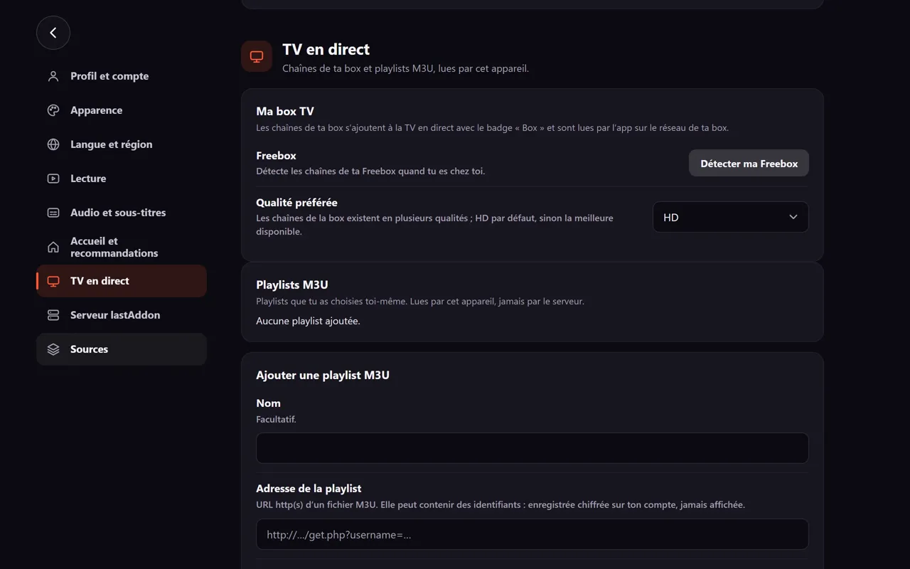
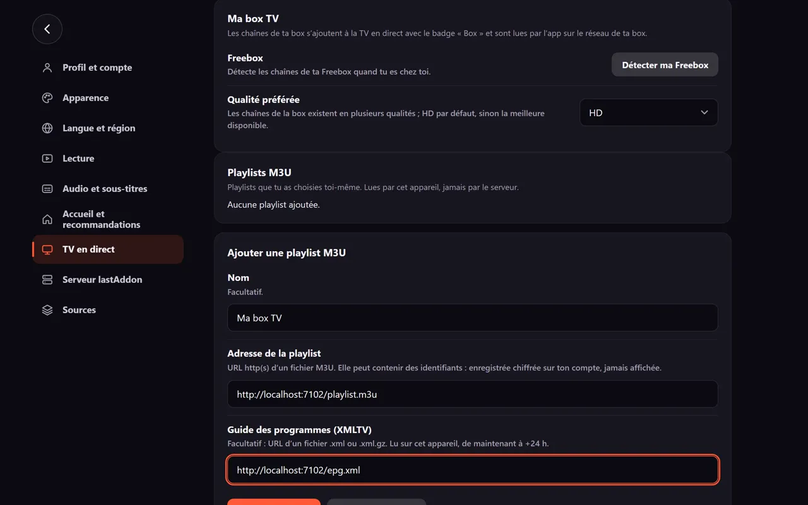
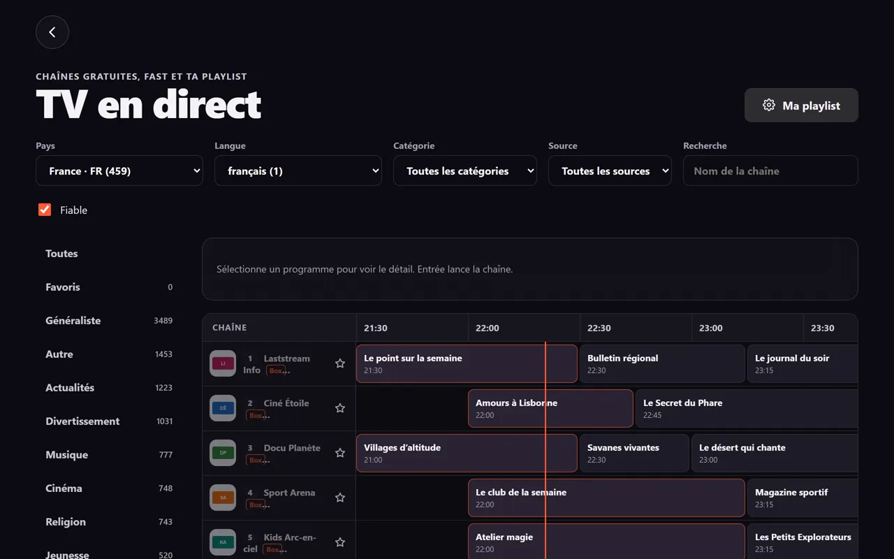
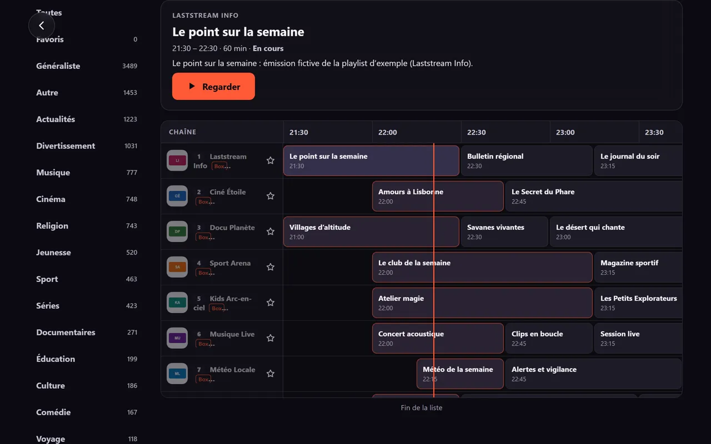

Étapes
-
Ouvre Réglages, catégorie TV en direct, carte « Playlists M3U ».

-
Dans « Ajouter une playlist M3U », renseigne : Nom (facultatif, 60 caractères) ; Adresse de la playlist (http ou https ; si elle contient des identifiants, ils sont chiffrés) ; Guide des programmes (XMLTV) (facultatif,
.xmlou.xml.gz).
-
Touche « Ajouter la playlist ». Tu peux aussi « Importer un fichier »
.m3uou.m3u8depuis l'appareil. -
Touche « Enregistrer », puis ouvre l'onglet TV : les chaînes apparaissent, filtrables par catégorie (colonne de gauche).

Touche un programme pour voir sa fiche, puis « Regarder ».

Format attendu
#EXTM3U
#EXTINF:-1 tvg-id="chaine1.fr" tvg-name="Chaîne 1" tvg-logo="https://exemple.com/logo1.png" group-title="Généralistes" tvg-chno="1",Chaîne 1
https://exemple.com/live/chaine1.m3u8La première ligne doit être #EXTM3U. Chaque #EXTINF est suivi de l'adresse du flux (http, https, rtsp, rtp ou udp). group-title donne la catégorie, tvg-chno le numéro (1 à 9999), tvg-id fait le lien avec le guide XMLTV.
| Limite | Valeur |
|---|---|
| Taille d'une playlist | 20 Mo |
| Délai de chargement | 20 s |
| Actualisation automatique | toutes les 24 h |
| Playlists par compte | 20 |
| Guide des programmes | de maintenant à +24 h |
Si ça ne marche pas
- « Cette adresse ne renvoie pas une playlist M3U. » → l'adresse pointe vers une page web ou un fichier d'un autre format.
- « Aucune chaîne trouvée dans cette playlist. » → fichier vide ou mal formé.
- « Adresse injoignable : vérifie la connexion (et le réseau de ta box pour une Freebox). » → vérifie l'adresse et ta connexion.
- « Disponible dans les apps Windows et Android : un navigateur ne peut pas joindre ta box. » → un navigateur web ne peut pas joindre la plupart des playlists : utilise l'app Windows ou Android.